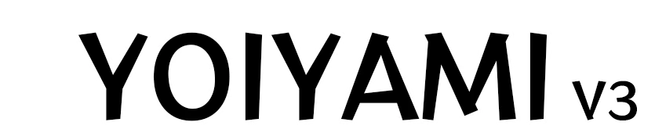

RLt
平面设计师 / 个人开发者 / 摄影爱好者
很高兴认识你！我是 RLt。
目前我就读于东华大学，是一位热爱游戏、音乐、数码、二次元的普通大学生。
二次元浓度不算很高，以 Galgame 和东方 Project 为主，姑且算是自学了一点日语。
有空的时候会写写代码，或者做一些感兴趣的 DIY 项目。
崇尚美观且实用的设计。但最后的结果似乎经常是美观 >> 实用。
很喜欢猫！虽然我没有猫（哭
ltfjx2333@gmail.com
2114085565
ltfjx
RRRRLtLt